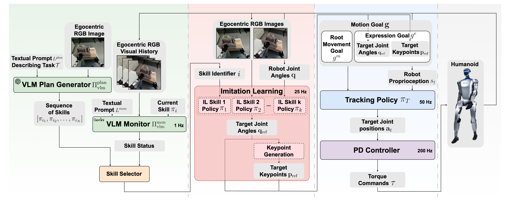

Enabling humanoid robots to reliably execute complex multi-step manipulation tasks is crucial for their effective deployment in industrial and household environments. This paper presents a hierarchical planning and control framework designed to achieve reliable multi-step humanoid manipulation. The proposed system comprises three layers: (1) a low-level RL-based controller responsible for tracking whole-body motion targets; (2) a mid-level set of skill policies trained via imitation learning that produce motion targets for different steps of a task; and (3) a high-level vision-language planning module that determines which skills should be executed and also monitors their completion in real-time using pretrained vision-language models (VLMs). Experimental validation is performed on a Unitree G1 humanoid robot executing a non-prehensile pick-and-place task. Over 40 real-world trials, the hierarchical system achieved a 72.5% success rate in completing the full manipulation sequence. These experiments confirm the feasibility of the proposed hierarchical system, highlighting the benefits of VLM-based skill planning and monitoring for multi-step manipulation scenarios.
